Intro to R via ggplot2
Note that this lesson has been modified from The Carpentries alternative version of the R Ecology lesson. Parts are reproduced in full, but the major changes were included to shorten the lesson to 60 minutes.
Introduction to R and RStudio
What are R and RStudio?
R refers to a programming language as well as the software that runs R code.
RStudio is a software interface that can make it easier to write R scripts and interact with the R software.
It's a very popular platform, and RStudio also maintains the tidyverse series of packages we will use in this lesson.
Navigating RStudio
We will use the RStudio integrated development environment (IDE) to write code into scripts, run code in R, navigate files on our computer, inspect objects we create in R, and look at the plots we make. RStudio has many other features that can help with things like version control, developing R packages, and writing Shiny apps, but we won't cover those in the workshop.

In the above screenshot, we can see 4 "panes" in the default layout:
- Top-Left: the Source pane that displays scripts and other files.
- If you only have 3 panes, and the Console pane is in the top left, press Shift+Cmd+N (Mac) or Shift+Ctrl+N (Windows) to open a blank R script, which should make the Source pane appear.
- Top-Right: the Environment/History pane, which shows all the objects in your current R session (Environment) and your command history (History)
- there are some other tabs here, including Connections, Build, Tutorial, and possibly Git
- we won't cover any of the other tabs, but RStudio has lots of other useful features
- Bottom-Left: the Console pane, where you can interact directly with an R console, which interprets R commands and prints the results
- There are also tabs for Terminal and Jobs
- Bottom-Right: the Files/Plots/Help/Viewer pane to navigate files or view plots and help pages
You can customize the layout of these panes, as well as many settings such as RStudio color scheme, font, and even keyboard shortcuts. You can access these settings by going to the menu bar, then clicking on Tools → Global Options.
RStudio puts most of the things you need to work in R into a single window, and also includes features like keyboard shortcuts, autocompletion of code, and syntax highlighting (different types of code are colored differently, making it easier to navigate your code).
Console vs. script
You can run commands directly in the R console, or you can write them into an R script. It may help to think of working in the console vs. working in a script as something like cooking. The console is like making up a new recipe, but not writing anything down. You can carry out a series of steps and produce a nice, tasty dish at the end. However, because you didn't write anything down, it's harder to figure out exactly what you did, and in what order.
Writing a script is like taking nice notes while cooking- you can tweak and edit the recipe all you want, you can come back in 6 months and try it again, and you don't have to try to remember what went well and what didn't. It's actually even easier than cooking, since you can hit one button and the computer "cooks" the whole recipe for you!
An additional benefit of scripts is that you can leave comments for yourself or others to read.
Lines that start with # are considered comments and will not be interpreted as R code.
Working in R and RStudio
The basis of programming is that we write down instructions for the computer to follow, and then we tell the computer to follow those instructions. We write these instructions in the form of code, which is a common language that is understood by the computer and humans (after some practice). We call these instructions commands, and we tell the computer to follow the instructions by running (also called executing) the commands.
Console
- The R console is where code is run/executed
- The prompt, which is the
>symbol, is where you can type commands - By pressing Enter, R will execute those commands and print the result.
- You can work here, and your history is saved in the History pane, but you can't access it in the future
Script
- A script is a record of commands to send to R, preserved in a plain text file with a
.Rextension - You can make a new R script by clicking
File → New File → R Script, clicking the green+button in the top left corner of RStudio, or pressing Shift+Cmd+N (Mac) or Shift+Ctrl+N (Windows). It will be unsaved, and called "Untitled1" - If you type out lines of R code in a script, you can send them to the R console to be evaluated
- Cmd+Enter (Mac) or Ctrl+Enter (Windows) will run the line of code that your cursor is on
- If you highlight multiple lines of code, you can run all of them by pressing Cmd+Enter (Mac) or Ctrl+Enter (Windows)
- By preserving commands in a script, you can edit and rerun them quickly, save them for later, and share them with others
- You can leave comments for yourself by starting a line with a
#
Data visualization with ggplot2
Getting started with ggplot2 and data
We are going to be using functions from the ggplot2 package to create visualizations of data.
Functions are predefined bits of code that automate sets of actions.
R itself has many built-in functions, but we can access many more by loading other packages of functions and data into R.
If you don't have a blank, untitled script open yet, go ahead and open one with Shift+Cmd+N (Mac) or Shift+Ctrl+N (Windows).
First, we'll use the install.packages() function to install the ggplot2 package.
install.packages("ggplot2")
This function installs the ggplot2 package onto your computer so that R can access it.
To use it in our current session, we load the package using the library() function.
library(ggplot2)
Next lesson we will learn how to read data from external files into R, but for now we are going to use a clean and ready-to-use dataset that is provided by the ratdat data package.
While most packages exist to bring new functionality into R, others package data, and some do both.
To make our dataset available, we need to install and load the ratdat package too.
install.packages('ratdat')
library(ratdat)
The ratdat package contains data from the Portal Project which is a long-term data set from Portal, Arizona, in the Chihuahuan desert.
We will be using a data set called complete_old, which contains older years of survey data.
Let's try to learn a little bit about the data.
We can use the View() function to open an interactive viewer which behaves like a simplified version of a spreadsheet program.
It's a handy function, but somewhat limited when trying to view large data sets.
View(complete_old)
If you hover over the tab for the interactive View(), you can click the "x" that appears, which will close the tab.
We can find out more about the dataset by using the str() function to examine the structure of the data.
str(complete_old)
## 'data.frame': 16878 obs. of 13 variables:
## $ record_id : int 1 2 3 4 5 6 7 8 9 10 ...
## $ month : int 7 7 7 7 7 7 7 7 7 7 ...
## $ day : int 16 16 16 16 16 16 16 16 16 16 ...
## $ year : int 1977 1977 1977 1977 1977 1977 1977 1977 1977 1977 ...
## $ plot_id : int 2 3 2 7 3 1 2 1 1 6 ...
## $ species_id : chr "NL" "NL" "DM" "DM" ...
## $ sex : chr "M" "M" "F" "M" ...
## $ hindfoot_length: int 32 33 37 36 35 14 NA 37 34 20 ...
## $ weight : int NA NA NA NA NA NA NA NA NA NA ...
## $ genus : chr "Neotoma" "Neotoma" "Dipodomys" "Dipodomys" ...
## $ species : chr "albigula" "albigula" "merriami" "merriami" ...
## $ taxa : chr "Rodent" "Rodent" "Rodent" "Rodent" ...
## $ plot_type : chr "Control" "Long-term Krat Exclosure" "Control" "Rodent Exclosure" ...
str() will tell us how many observations/rows (obs) and variables/columns we have, as well as some information about each of the variables.
We see the name of a variable (such as year), followed by the kind of variable (int for integer, chr for character), and the first 10 entries in that variable.
We will talk more about different data types and structures later on.
Plotting with ggplot2
ggplot2 is a powerful package that allows you to create plots from tabular data (data in a table format with rows and columns).
The gg in ggplot2 stands for "grammar of graphics", and the package uses consistent vocabulary to create plots of widely varying types.
Therefore, we only need small changes to our code if the underlying data changes or we decide to make a box plot instead of a scatter plot.
This approach helps you create publication-quality plots with minimal adjusting and tweaking.
ggplot2 is part of the tidyverse series of packages, which tend to like data in the "long" or "tidy" format, which means each column represents a single variable, and each row represents a single observation.
Well-structured data will save you lots of time making figures with ggplot2.
For now, we will use data that are already in this format.
Later, we'll learn about other packages in tidyverse and how to use them to get data into this format.
We start learning R by using ggplot2 because it relies on concepts that we will need when we talk about data transformation in the next lessons.
ggplot plots are built step by step by adding new layers, which allows for extensive flexibility and customization of plots.
To build a plot, we will use a basic template that can be used for different types of plots:
ggplot(data = <DATA>, mapping = aes(<MAPPINGS>)) + <GEOM_FUNCTION>()
We use the ggplot() function to create a plot.
To tell it what data to use, we need to specify the data argument.
An argument is an input that a function takes.
You set arguments using the = sign.
ggplot(data = complete_old)
We get a blank plot because we haven't told ggplot() which variables we want to correspond to parts of the plot.
We can specify the "mapping" of variables to plot elements, such as x/y coordinates, size, or shape, by using the aes() function.
We'll also add a comment, which is any line starting with a #.
It's a good idea to use comments to organize your code or clarify what you are doing.
# adding a mapping to x and y axes
ggplot(data = complete_old, mapping = aes(x = weight, y = hindfoot_length))
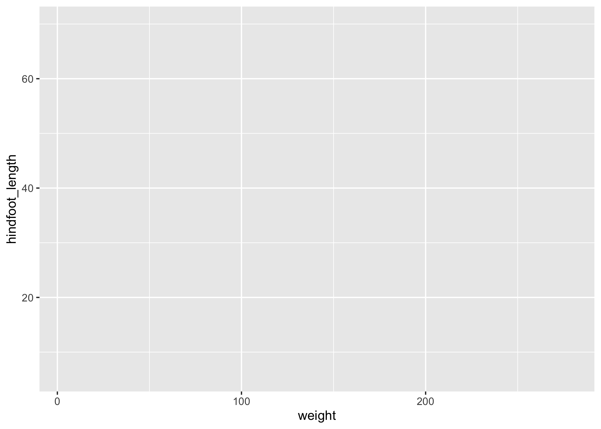
Now we've got a plot with x and y axes corresponding to variables from complete_old.
However, we haven't specified how we want the data to be displayed.
We do this using geom_ functions, which specify the type of geometry we want, such as points, lines, or bars.
We can add a geom_point() layer to our plot by using the + sign.
We indent onto a new line to make it easier to read.
The plus sign + at the end of the first line signifies that we are adding another layer to the plot.
ggplot(data = complete_old, mapping = aes(x = weight, y = hindfoot_length)) +
geom_point()
## Warning: Removed 3081 rows containing missing values (`geom_point()`).
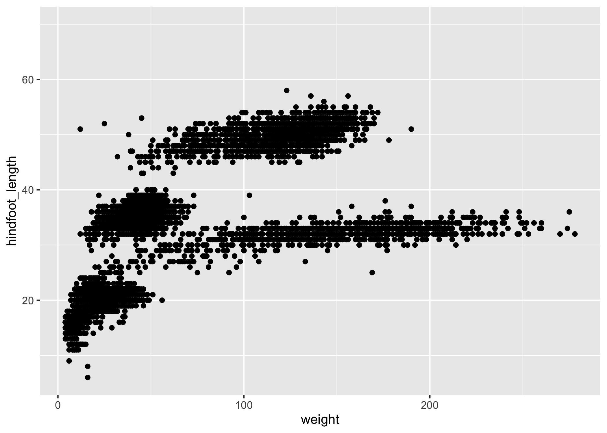
You may notice a warning that missing values were removed.
If a variable necessary to make the plot is missing from a given row of data (in this case, hindfoot_length or weight), it can't be plotted.
ggplot2 uses a warning message to let us know that some rows couldn't be plotted.
Warning messages are one of a few ways R will communicate with you. Warnings can be thought of as a "heads up". Nothing necessarily went wrong, but the author of that function wanted to draw your attention to something. In the above case, it's worth knowing that some of the rows of your data were not plotted because they had missing data.
A more serious type of message is an error. Here's an example:
ggplot(data = complete_old, mapping = aes(x = weight, y = hindfoot_length)) +
geom_poit()
As you can see, we only get the error message, with no plot, because something has actually gone wrong.
This particular error message is fairly common, and it happened because we misspelled point as poit.
Because there is no function named geom_poit(), R tells us it can't find a function with that name.
Changing aesthetics
ggplot plots are made layer by layer.
We'll keep adding new layers to the plot we just made to make it look different.
You may have noticed that parts of our scatter plot have many overlapping points, making it difficult to see all the data.
We can adjust the transparency of the points using the alpha argument, which takes a value between 0 and 1:
ggplot(data = complete_old, mapping = aes(x = weight, y = hindfoot_length)) +
geom_point(alpha = 0.2)
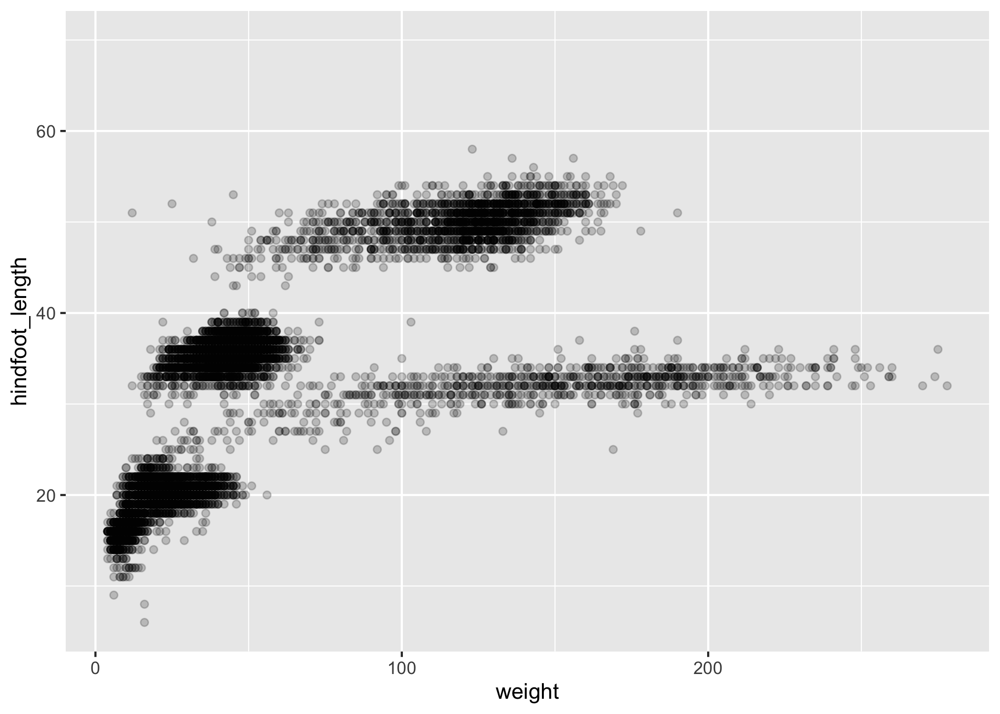
We can also change the color of the points:
ggplot(data = complete_old, mapping = aes(x = weight, y = hindfoot_length)) +
geom_point(alpha = 0.2, color = "blue")
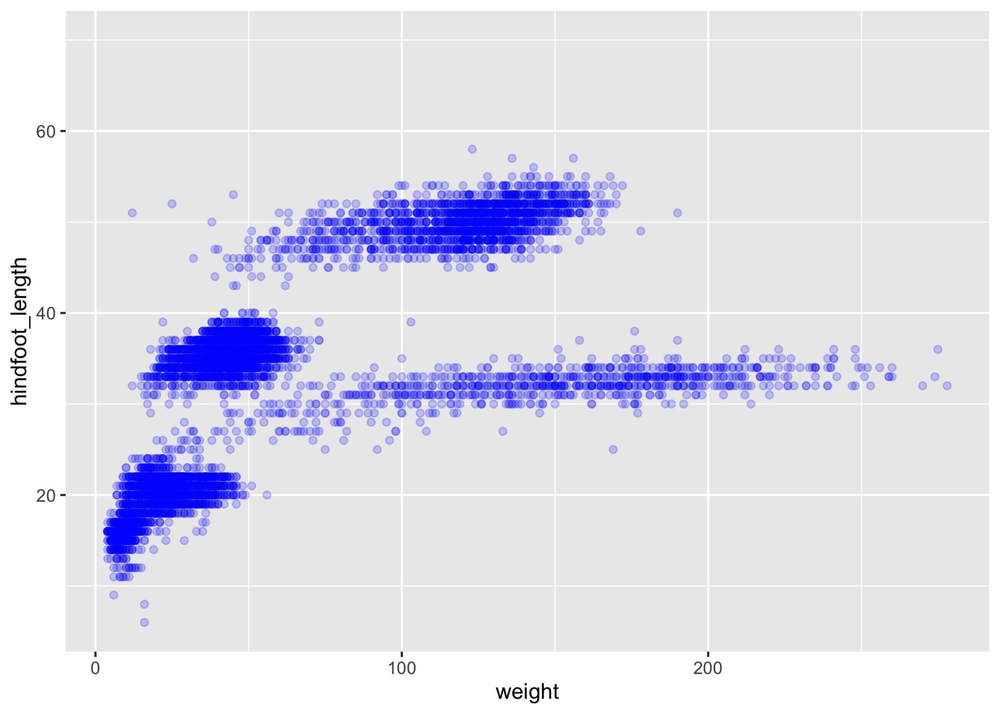
When we add more information into the aes() function, we're changing the aesthetic of the plot.
This information is linked directly to the data in the underlying data frame that we're plotting.
Adding another variable
Let's try coloring our points according to the sampling plot type (plot here refers to the physical area where rodents were sampled and has nothing to do with making graphs).
Since we're now mapping a variable (plot_type) to a component of the ggplot2 plot (color), we need to put the argument inside aes():
ggplot(data = complete_old, mapping = aes(x = weight, y = hindfoot_length, color = plot_type)) +
geom_point(alpha = 0.2)
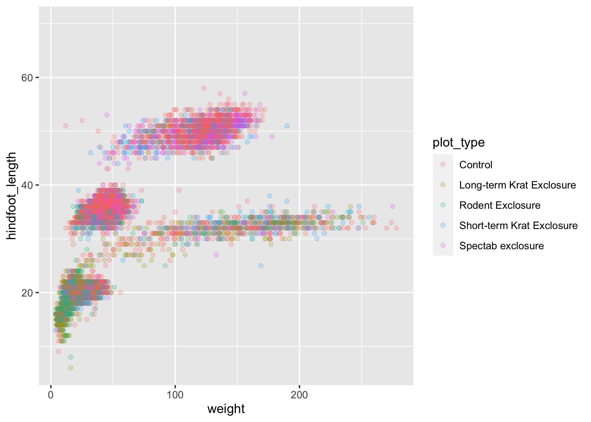
Challenge 1: Modifying plots
Part 1: Try modifying the plot so that the shape of the point varies by sex. You will set the shape the same way you set the color. Do you think this is a good way to represent sex with these data?
Challenge solution
ggplot(data = complete_old,
mapping = aes(x = weight, y = hindfoot_length, shape = sex)) +
geom_point(alpha = 0.2)
Part 2: Now try changing the plot so that the color of the points vary by year. Do you notice a difference in the color scale compared to changing color by plot type? Why do you think this happened?
Challenge solution
ggplot(data = complete_old,
mapping = aes(x = weight, y = hindfoot_length, color = year)) +
geom_point(alpha = 0.2)
color=plot_type because plot_type and year are different variable types.
plot_type is a categorical variable, so ggplot2 defaults to use a discrete color scale, whereas year is a numeric variable, so ggplot2 uses a continuous color scale.
Changing scales
The default discrete color scale isn't always ideal: it isn't friendly to viewers with colorblindness and it doesn't translate well to grayscale.
However, ggplot2 comes with quite a few other color scales, including the fantastic viridis scales, which are designed to be colorblind and grayscale friendly. We can change scales by adding scale_ functions to our plots:
ggplot(data = complete_old, mapping = aes(x = weight, y = hindfoot_length, color = plot_type)) +
geom_point(alpha = 0.2) +
scale_color_viridis_d()
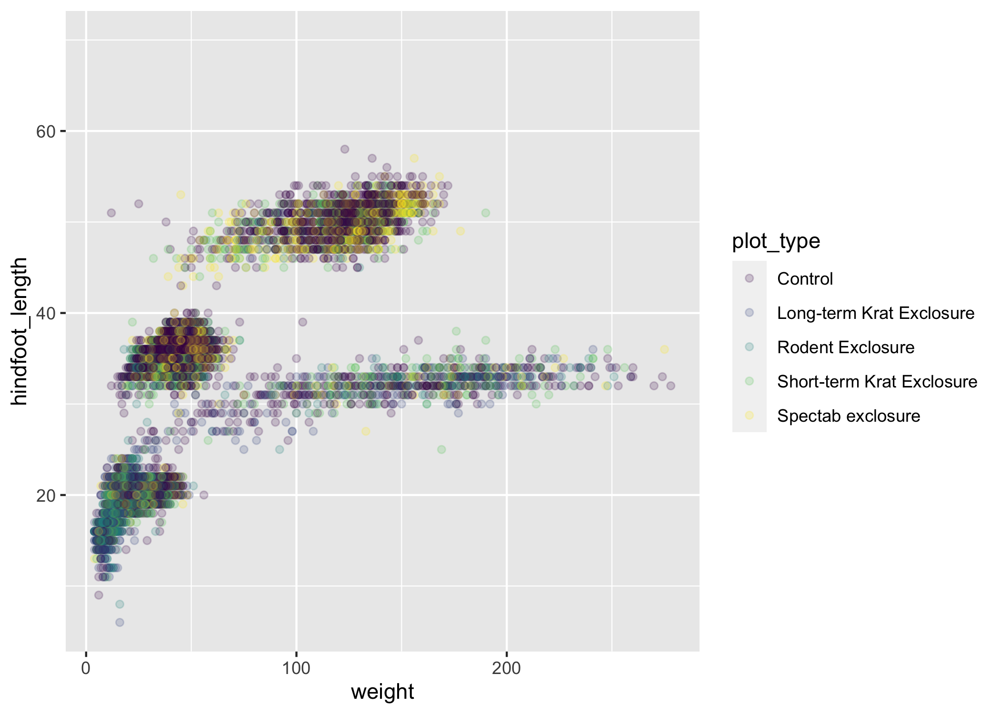
Scales don't just apply to colors - any plot component that you put inside aes() can be modified with scale_ functions. Just as we modified the scale used to map plot_type to color, we can modify the way that weight is mapped to the x axis by using the scale_x_log10() function:
ggplot(data = complete_old, mapping = aes(x = weight, y = hindfoot_length, color = plot_type)) +
geom_point(alpha = 0.2) +
scale_x_log10()
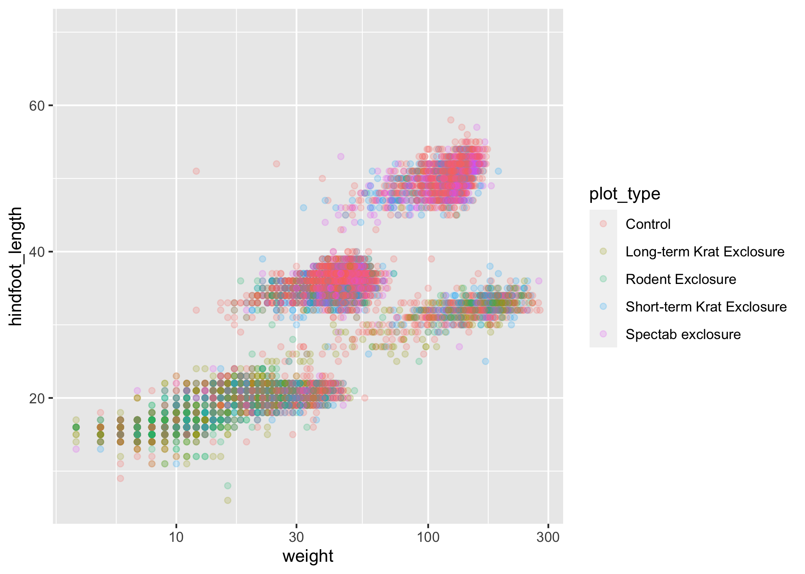
Boxplot
Let's try making a different type of plot altogether. We'll start off with our same basic building blocks using ggplot() and aes().
ggplot(data = complete_old, mapping = aes(x = plot_type, y = hindfoot_length))
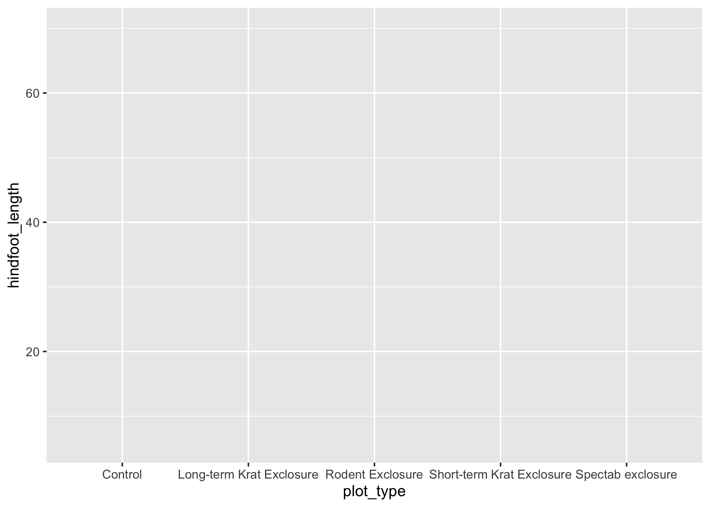
This time, let's try making a boxplot, which will have plot_type on the x axis and hindfoot_length on the y axis.
We can do this by adding geom_boxplot() to our ggplot():
ggplot(data = complete_old, mapping = aes(x = plot_type, y = hindfoot_length)) +
geom_boxplot()
## Warning: Removed 2733 rows containing non-finite values (`stat_boxplot()`).
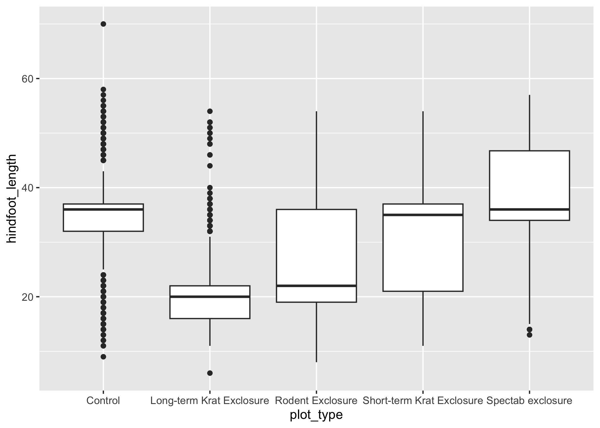
Just as we colored the points before, we can color our boxplot by plot_type as well:
ggplot(data = complete_old, mapping = aes(x = plot_type, y = hindfoot_length, color = plot_type)) +
geom_boxplot()
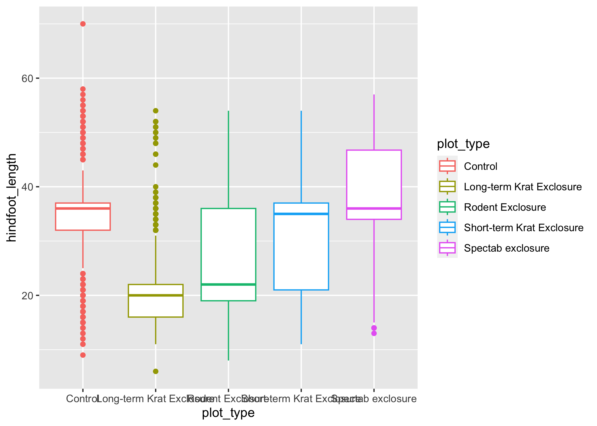
It looks like color has only affected the outlines of the boxplot, not the rectangular portions.
This is because the color only impacts 1-dimensional parts of a ggplot: points and lines.
To change the color of 2-dimensional parts of a plot, we use fill:
ggplot(data = complete_old, mapping = aes(x = plot_type, y = hindfoot_length, fill = plot_type)) +
geom_boxplot()
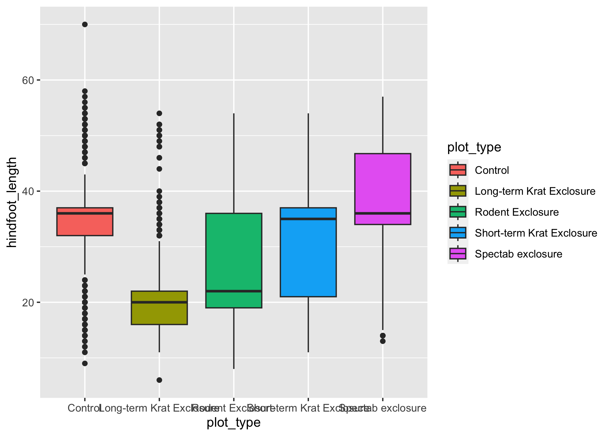
Adding geoms
One of the most powerful aspects of ggplot is the way we can add components to a plot in successive layers.
While boxplots can be very useful for summarizing data, it is often helpful to show the raw data as well.
With ggplot, we can easily add another geom_ to our plot to show the raw data.
Let's add geom_point() to visualize the raw data.
We will modify the alpha argument to help with overplotting.
ggplot(data = complete_old, mapping = aes(x = plot_type, y = hindfoot_length)) +
geom_boxplot() +
geom_point(alpha = 0.2)
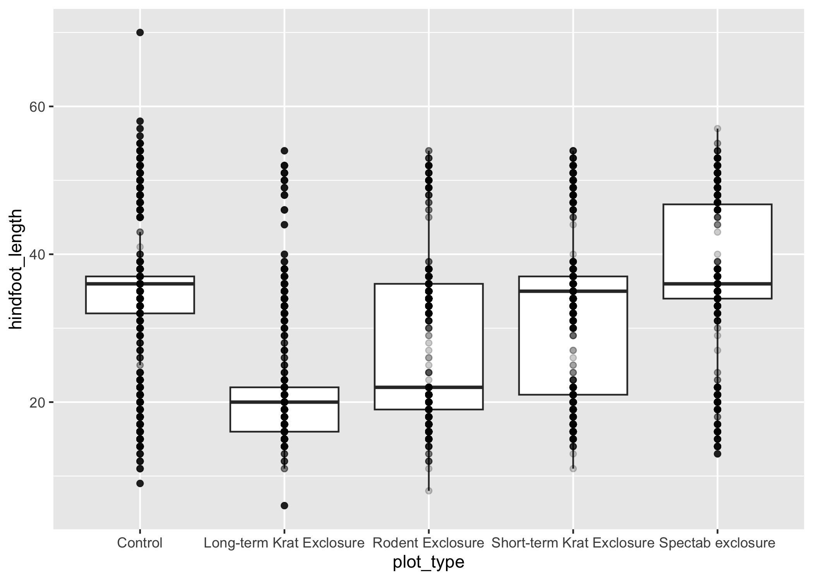
Uh oh... all our points for a given x axis category fall exactly on a line, which isn't very useful.
We can shift to using geom_jitter(), which will add points with a bit of random noise added to the positions to prevent this from happening.
ggplot(data = complete_old, mapping = aes(x = plot_type, y = hindfoot_length)) +
geom_boxplot() +
geom_jitter(alpha = 0.2)
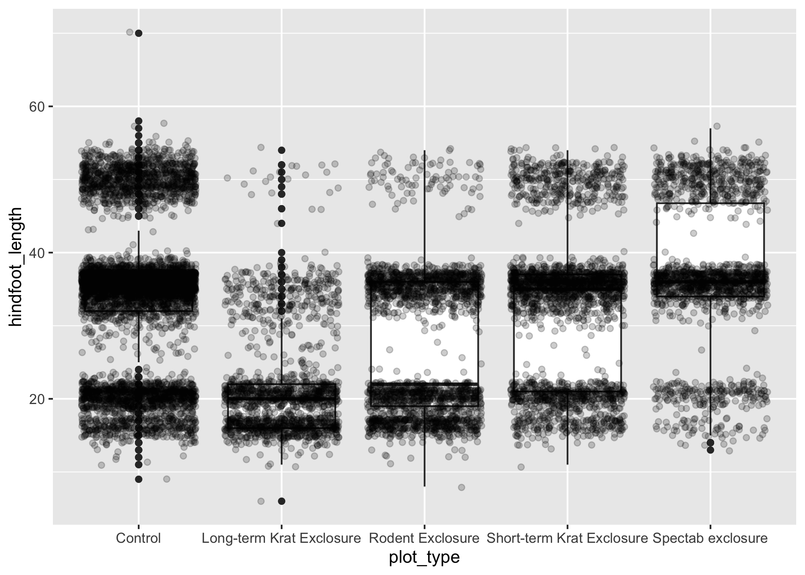
You may have noticed that some of our data points are now appearing on our plot twice: the outliers are plotted as black points from geom_boxplot(), but they are also plotted with geom_jitter().
Since we don't want to represent these data multiple times in the same form (points), we can stop geom_boxplot() from plotting them.
We do this by setting the outlier.shape argument to NA, which means the outliers don't have a shape to be plotted.
ggplot(data = complete_old, mapping = aes(x = plot_type, y = hindfoot_length)) +
geom_boxplot(outlier.shape = NA) +
geom_jitter(alpha = 0.2)
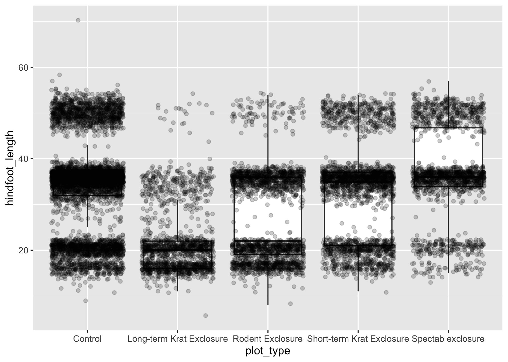
Just as before, we can map plot_type to color by putting it inside aes().
ggplot(data = complete_old, mapping = aes(x = plot_type, y = hindfoot_length, color = plot_type)) +
geom_boxplot(outlier.shape = NA) +
geom_jitter(alpha = 0.2)
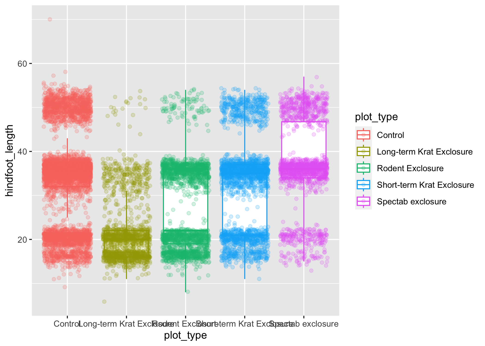
Notice that both the color of the points and the color of the boxplot lines changed.
Any time we specify an aes() mapping inside our initial ggplot() function, that mapping will apply to all our geoms.
If we want to limit the mapping to a single geom, we can put the mapping into the specific geom_ function, like this:
ggplot(data = complete_old, mapping = aes(x = plot_type, y = hindfoot_length)) +
geom_boxplot(outlier.shape = NA) +
geom_jitter(aes(color = plot_type), alpha = 0.2)
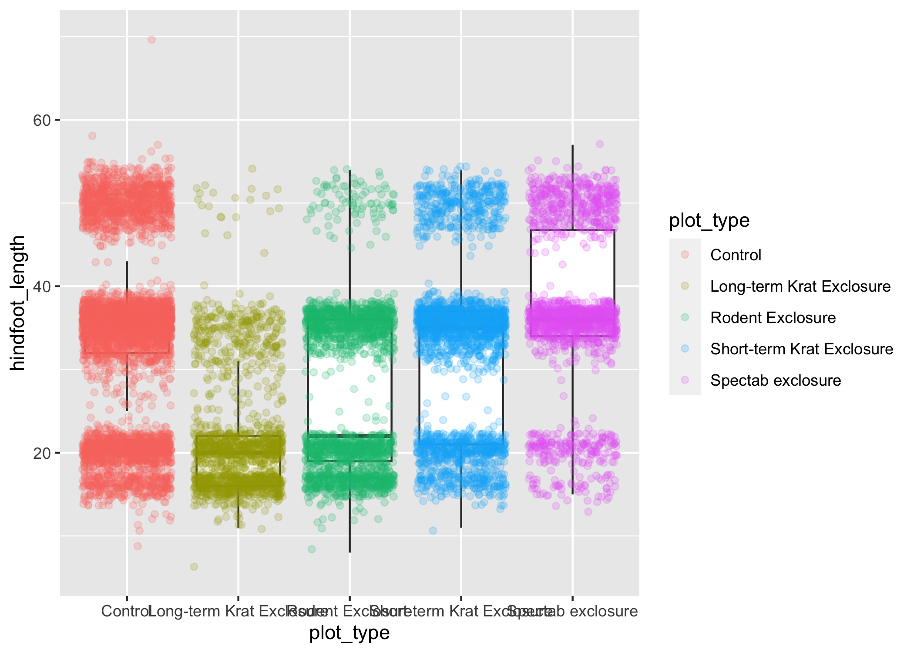
Now our points are colored according to plot_type, but the boxplots are all the same color.
One thing you might notice is that even with alpha = 0.2, the points obscure parts of the boxplot.
This is because the geom_point() layer comes after the geom_boxplot() layer, which means the points are plotted on top of the boxes.
To put the boxplots on top, we switch the order of the layers:
ggplot(data = complete_old, mapping = aes(x = plot_type, y = hindfoot_length)) +
geom_jitter(aes(color = plot_type), alpha = 0.2) +
geom_boxplot(outlier.shape = NA)
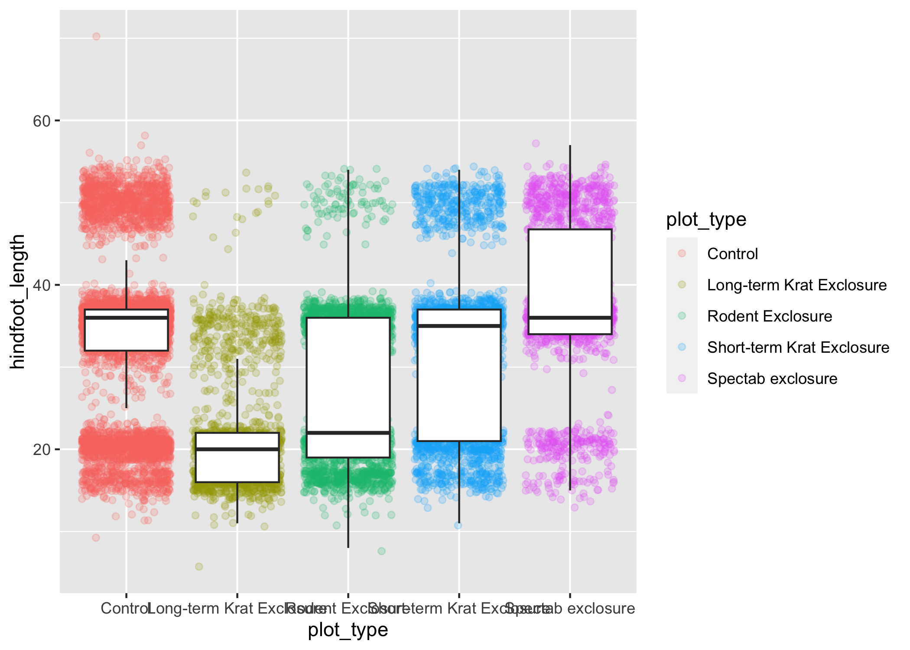
Now we have the opposite problem!
The white fill of the boxplots completely obscures some of the points.
To address this problem, we can remove the fill from the boxplots altogether, leaving only the black lines.
To do this, we set fill to NA:
ggplot(data = complete_old, mapping = aes(x = plot_type, y = hindfoot_length)) +
geom_jitter(aes(color = plot_type), alpha = 0.2) +
geom_boxplot(outlier.shape = NA, fill = NA)
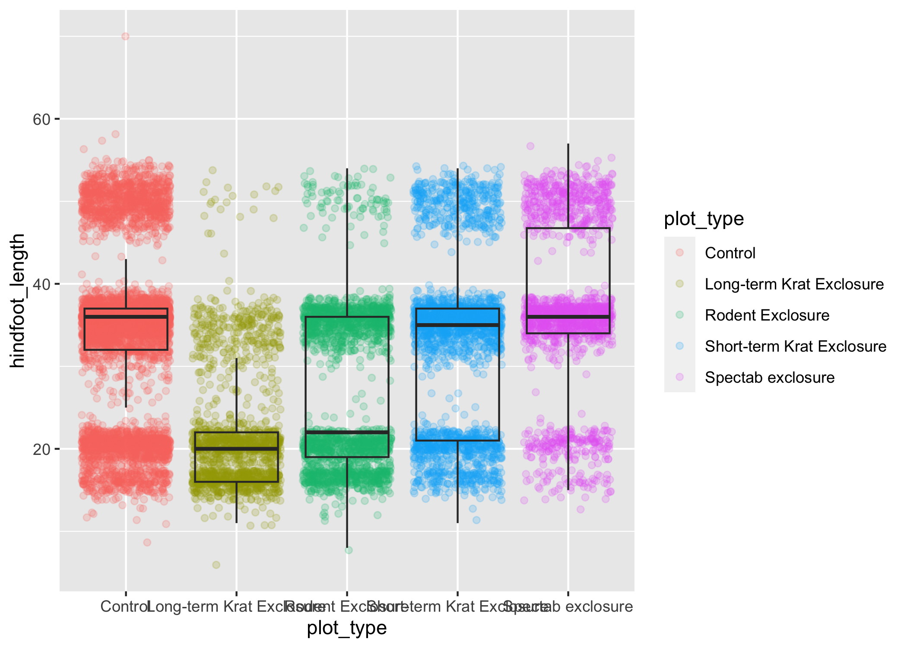
Now we can see all the raw data and our boxplots on top.
Challenge 2: Change geoms
Violin plots are similar to boxplots- try making one using plot_type and hindfoot_length as the x and y variables.
Remember that all geom functions start with geom_, followed by the type of geom.
This might also be a place to test your search engine skills.
It is often useful to search for R package_name stuff you want to search.
So for this example we might search for R ggplot2 violin plot.
Challenge solution
ggplot(data = complete_old,
mapping = aes(x = plot_type,
y = hindfoot_length,
color = plot_type)) +
geom_jitter(alpha = 0.2) +
geom_violin(fill = "white")
For an extra challenge, make the color of the points and outlines of the violins vary by plot_type, and set the fill of the violins to white.
Try playing with the order of the layers to see what looks best.
Challenge solution
ggplot(data = complete_old,
mapping = aes(x = plot_type,
y = hindfoot_length,
color = plot_type)) +
geom_jitter(alpha = 0.2) +
geom_violin(fill = "white")
Changing themes
So far we've been changing the appearance of parts of our plot related to our data and the geom_ functions, but we can also change many of the non-data components of our plot.
At this point, we are pretty happy with the basic layout of our plot, so we can assign it to a plot to a named object.
We do this using the assignment arrow <-.
What we are doing here is taking the result of the code on the right side of the arrow, and assigning it to an object whose name is on the left side of the arrow.
We will create an object called myplot. If you run the name of the ggplot2 object, it will show the plot, just like if you ran the code itself.
myplot <- ggplot(data = complete_old, mapping = aes(x = plot_type, y = hindfoot_length)) +
geom_jitter(aes(color = plot_type), alpha = 0.2) +
geom_boxplot(outlier.shape = NA, fill = NA)
myplot
## Warning: Removed 2733 rows containing non-finite values (`stat_boxplot()`).
## Warning: Removed 2733 rows containing missing values (`geom_point()`).
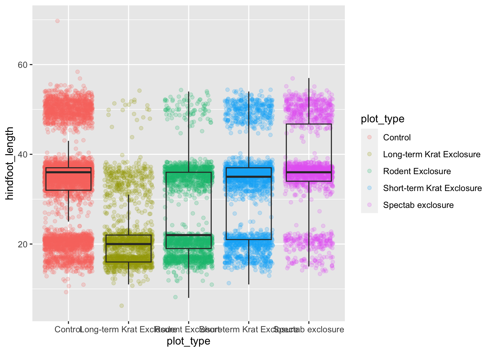
This process of assigning something to an object is not specific to ggplot2, but rather a general feature of R.
We will be using it a lot in the rest of this lesson.
We can now work with the myplot object as if it was a block of ggplot2 code, which means we can use + to add new components to it.
We can change the overall appearance using theme_ functions. Let's try a black-and-white theme by adding theme_bw() to our plot:
myplot + theme_bw()
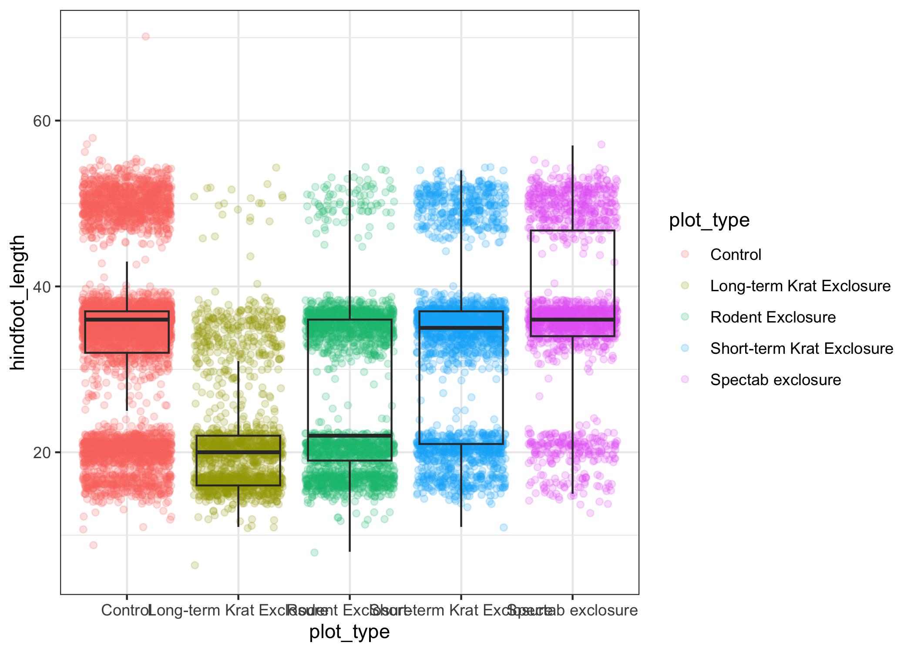
As you can see, a number of parts of the plot have changed.
theme_ functions usually control many aspects of a plot's appearance all at once, for the sake of convenience.
To individually change parts of a plot, we can use the theme() function, which can take many different arguments to change things about the text, grid lines, background color, and more.
Let's try changing the size of the text on our axis titles.
We can do this by specifying that the axis.title should be an element_text() with size set to 14.
myplot +
theme_bw() +
theme(axis.title = element_text(size = 14))
Another change we might want to make is to remove the vertical grid lines.
Since our x axis is categorical, those grid lines aren't useful.
To do this, inside theme(), we will change the panel.grid.major.x to an element_blank().
myplot +
theme_bw() +
theme(axis.title = element_text(size = 14),
panel.grid.major.x = element_blank())
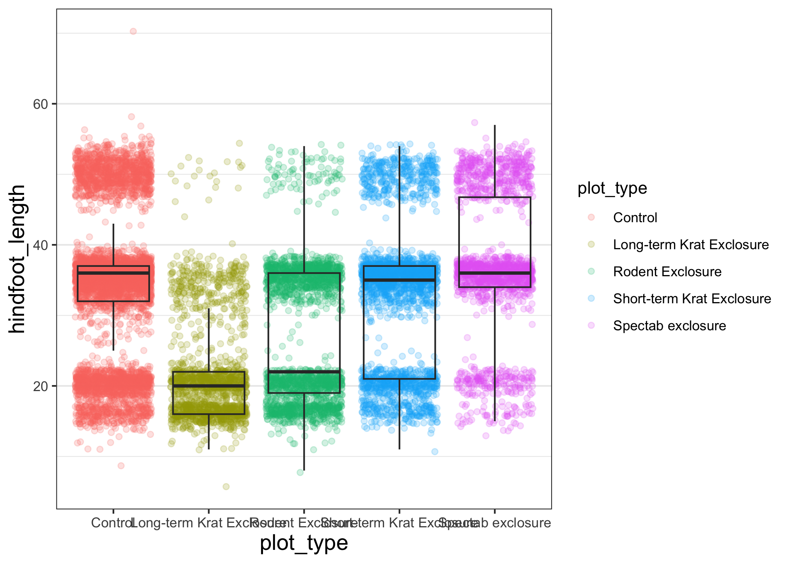
Another useful change might be to remove the color legend, since that information is already on our x axis.
For this one, we will set legend.position to "none".
myplot +
theme_bw() +
theme(axis.title = element_text(size = 14),
panel.grid.major.x = element_blank(),
legend.position = "none")
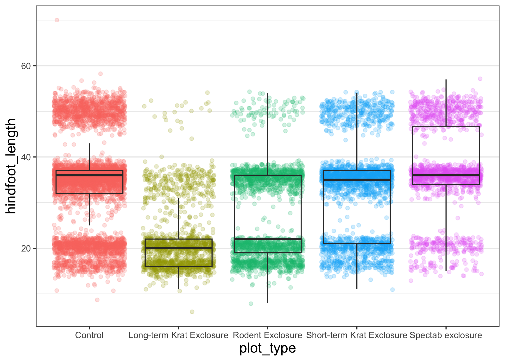
Changing labels
We probably want to make our axis titles nicer, and perhaps add a main title to the plot.
We can do this using the labs() function:
myplot +
theme_bw() +
theme(axis.title = element_text(size = 14),
legend.position = "none") +
labs(title = "Rodent size by plot type",
x = "Plot type",
y = "Hindfoot length (mm)")
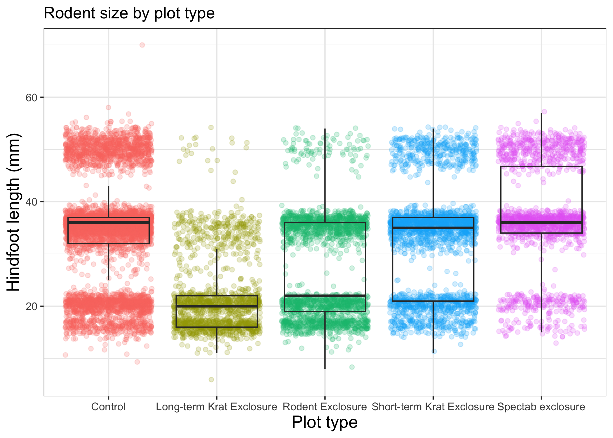
We removed our legend from this plot, but you can also change the titles of various legends using labs().
For example, labs(color = "Plot type") would change the title of a color scale legend to "Plot type".
Challenge 3: Customizing a plot
Modify the previous plot by adding a descriptive subtitle. Increase the font size of the plot title and make it bold. Hint: "bold" is referred to as a font "face."
Challenge solution
myplot +
theme_bw() +
theme(axis.title = element_text(size = 14), legend.position = "none",
plot.title = element_text(face = "bold", size = 20)) +
labs(title = "Rodent size by plot type",
subtitle = "Long-term dataset from Portal, AZ",
x = "Plot type",
y = "Hindfoot length (mm)")
Faceting
One of the most powerful features of ggplot is the ability to quickly split a plot into multiple smaller plots based on a categorical variable, which is called faceting.
So far we've mapped variables to the x axis, the y axis, and color, but trying to add a 4th variable becomes difficult. Changing the shape of a point might work, but only for very few categories, and even then, it can be hard to tell the differences between the shapes of small points.
Instead of cramming one more variable into a single plot, we will use the facet_wrap() function to generate a series of smaller plots, split out by sex.
We also use ncol to specify that we want them arranged in a single column:
myplot +
theme_bw() +
theme(axis.title = element_text(size = 14),
legend.position = "none",
panel.grid.major.x = element_blank()) +
labs(title = "Rodent size by plot type",
x = "Plot type",
y = "Hindfoot length (mm)",
color = "Plot type") +
facet_wrap(vars(sex), ncol = 1)
Faceting comes in handy in many scenarios. It can be useful when:
- a categorical variable has too many levels to differentiate by color (such as a dataset with 20 countries)
- your data overlap heavily, obscuring categories
- you want to show more than 3 variables at once
- you want to see each category in isolation while allowing for general comparisons between categories
Exporting plots
Once we are happy with our final plot, we can assign the whole thing to a new object, which we can call finalplot.
finalplot <- myplot +
theme_bw() +
theme(axis.title = element_text(size = 14),
legend.position = "none",
panel.grid.major.x = element_blank()) +
labs(title = "Rodent size by plot type",
x = "Plot type",
y = "Hindfoot length (mm)",
color = "Plot type") +
facet_wrap(vars(sex), ncol = 1)
After this, we can run ggsave() to save our plot. The first argument we give is the path to the file we want to save, including the correct file extension.
This code will make an image called rodent_size_plots.jpg in the images/ folder of our current project.
We are making a .jpg, but you can save .pdf, .tiff, and other file formats.
Next, we tell it the name of the plot object we want to save.
We can also specify things like the width and height of the plot in inches.
ggsave(filename = "images/rodent_size_plots.jpg", plot = finalplot,
height = 6, width = 8)
The final plot should look like this:
## Warning: Removed 2733 rows containing non-finite values (`stat_boxplot()`).
## Warning: Removed 2733 rows containing missing values (`geom_point()`).
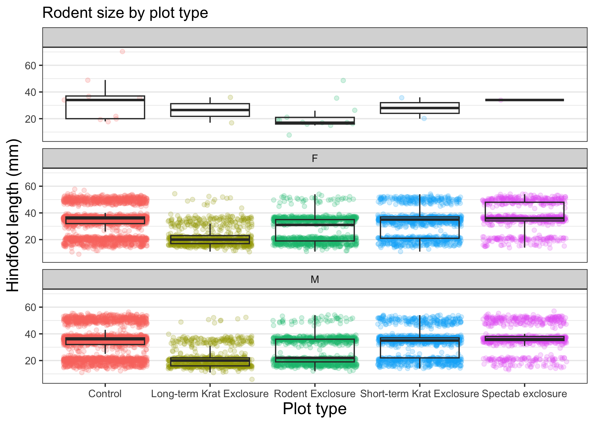
Challenge 4: Make your own plot
Try making your own plot! You can run str(complete_old) or ?complete_old to explore variables you might use in your new plot.
Feel free to use variables we have already seen, or some we haven't explored yet.
Here are a couple ideas to get you started:
- make a histogram of one of the numeric variables
- try using a different color
scale_ - try changing the size of points or thickness of lines in a
geom